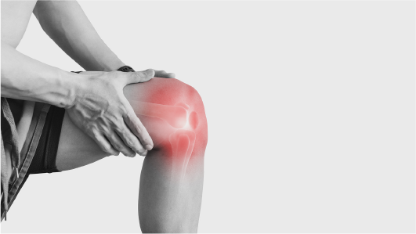

Touching lives, one patient at a time.
Providing all our best. Because Your Life Matters. Fast, friendly and accurate care for you
24/7 Emergency Hotline
+91 9911 2336 11 |
Touching lives, one patient at a time. Providing all our best. Because Your Life Matters. Fast, friendly and accurate care for you |
24/7 Emergency Hotline +91 9911 2336 11 |
 |
|
Orthopeadic department deals with the injuries or deformities of the musculoskeletal system. It includes the bones, joints, ligaments, tendons, and muscles of the human body. These parts play a crucial role in every activity that we perform from dawn to dusk. Any kind of injury or disorder in the musculoskeletal system will hinder one’s life experience significantly.
Initially, the orthopeadic department was concerned mainly about musculoskeletal deformities and injuries in children. Over the years, the orthopeadic specialty has evolved significantly to encompass the diagnosis and treatment of a wide range of disorders and conditions in patients of all ages. Kamineni Hospital is regarded as one of the best orthopeadic hospitals in Hyderabad for offering holistic treatment for patients.
A medical professional who is a specialist in orthopeadics is known as Orthopedists. They deal with both surgical and nonsurgical procedures to treat orthopeadic disorders and injuries. Some of the most common disorders orthopeadics deals with are spine diseases, sports injuries, degenerative diseases, infections, tumours, musculoskeletal trauma, and more.
One of the best orthopeadic hospitals in Hyderabad, Kamineni Hospital provides multidisciplinary integrated healthcare services. Equipped with modern technology equipment allows our top orthopeadic surgeons to deliver exceptional and precision orthopeadic surgeries.
Top orthopeadic surgeons at Kamineni Hospitals are equipped with modern technologies like CAOS to deliver exceptional treatment. Computer-assisted orthopeadic surgery helps surgeons deliver accurate and effective treatment for a wide range of orthopeadic disorders.
It uses 3-D imaging techniques and software to conduct different orthopeadic procedures. The process mainly involves placing sensors around the affected tissue. Which then generated images on a computer screen to diagnose your condition to perform the most effective surgery.
Some CAOS technologies are also equipped with navigational and robotic tools to execute the physical processes of an orthopeadic procedure.
orthopeadic disorders or injuries are complex and nuanced, so they have to be properly evaluated for the right treatment. orthopeadic surgeons use the following technologies to diagnose and plan for the proper treatment.
orthopeadics rarely use this type of technology for diagnosis and treatment purposes. Though laser technology is popular in eye and skincare departments, orthopeadics don’t prefer laser treatments most of the time. The technology is still under development in the orthopeadic department. Here are some of the processes in orthopeadics laser technology are used
|
INFINITE HOSPITALS |